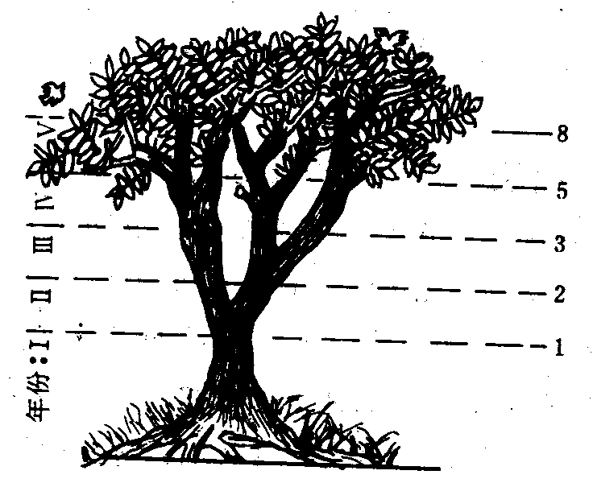

Each new term in the Fibonacci sequence is generated by adding the previous two terms. By starting with 1 and 2, the first 10 terms will be:
1, 2, 3, 5, 8, 13, 21, 34, 55, 89, …
By considering the terms in the Fibonacci sequence whose values do not exceed four million, find the sum of the even-valued terms.
什么是斐波那契数列呢？
百度百科是这么解释的：波那契数列，又称黄金分割数列，指的是这样一个数列：0、1、1、2、3、5、8、13、21、……在数学上，斐波纳契数列以如下被以递归的方法定义：F0=0，F1=1，Fn=F(n-1)+F(n-2)（n>=2，n∈N*） 斐波那契数列在自然科学的其他分支，有许多应用。例如，树木的生长，由于新生的枝条，往往需要一段“休息”时间，供自身生长，而后才能萌发新枝。所以，一株树苗在一段间隔，例如一年，以后长出一条新枝；第二年新枝“休息”，老枝依旧萌发；此后，老枝与“休息”过一年的枝同时萌发，当年生的新枝则次年“休息”。这样，一株树木各个年份的枝桠数，便构成斐波那契数列。这个规律，就是生物学上著名的“鲁德维格定律”。 另外，观察延龄草、野玫瑰、南美血根草、大波斯菊、金凤花、耧斗菜、百合花、蝴蝶花的花瓣，可以发现它们花瓣数目具有斐波那契数：3、5、8、13、21、……

斐波那契螺旋：具有13条顺时针旋转和21条逆时针旋转的螺旋的蓟的头部 这些植物懂得斐波那契数列吗？应该并非如此，它们只是按照自然的规律才进化成这样。这似乎是植物排列种子的“优化方式”，它能使所有种子具有差不多的大小却又疏密得当，不至于在圆心处挤了太多的种子而在圆周处却又稀稀拉拉。叶子的生长方式也是如此，对于许多植物来说，每片叶子从中轴附近生长出来，为了在生长的过程中一直都能最佳地利用空间（要考虑到叶子是一片一片逐渐地生长出来，而不是一下子同时出现的），每片叶子和前一片叶子之间的角度应该是222.5度，这个角度称为“黄金角度”，因为它和整个圆周360度之比是黄金分割数0.618033989……的倒数，而这种生长方式就决定了斐波那契螺旋的产生。向日葵的种子排列形成的斐波那契螺旋有时能达到89，甚至144条。
百度的解释还有很多，感兴趣的童鞋可以自行搜索下…
问题2：找出最后一个数值小于4百万的斐波那契数列，对其中的偶数项求和。
# 定义斐波那契数列为一个向量
x <- vector()
x[1] <- 0
x[2] <- 1
# 根据斐波那契数列的定义第n项为前两项的和，
# 求得倒数第二项小于4百万的数列
n <- 3
while (x[n-1]< 4000000) {
x[n] <- x[n-1]+x[n-2]
n <- n+1
}
# 判断是否最后一项数值大于4百万，如果大于，则删除这一项
if(x[length(x)] > 4e6) x <- x[-length(x)]
# 求得数列中偶数的和
sum(x[x%%2==0])## [1] 4613732备注：转移自新浪博客，截至2021年11月，原阅读数33，评论0个。